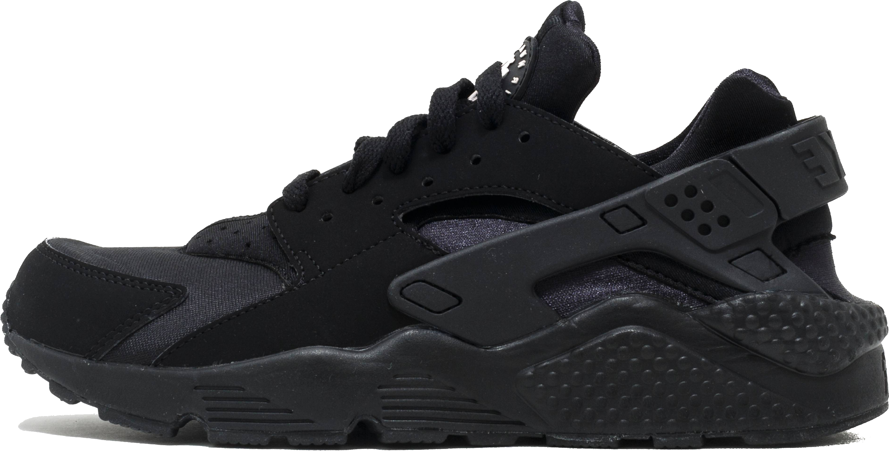

AIR HUARACHE
THE HUARACHE RUNNER IS ONE OF THE MOST POPULAR NIKE SNEAKERS EVER. THIS SHOE IS READILY AVAILABLE FOR PURCHASE FROM MOST SNEAKER RETAILERS. ALTHOUGH IT IS NOT AS EXCLUSIVE OR LIMITED AS OTHERS IN THIS COLLECTION, IT HAS BECOME A STAPLE, MUST-HAVE SHOE FOR SNEAKER COLLECTORS WORLDWIDE. THE AIR HUARACHE WAS THE FIRST OF THE HUARACHE LINE. IT WAS DESIGNED BY HIROSHI FUJIWARA, MARK PARKER, AND TINKER HATFIELD. THE AIR HUARACHE IS MADE UP OF A NEOPRENE BODY AND ITS SIGNATURE RUBBER STRAP THAT WRAPS AROUND THE HEEL/ANKLE AREA.
INITIAL RELEASE: 1991
RELEASES: 103
COLORWAY: BLACK/BLACK
CURRENT RESALE PRICE: $120 (NIKE)